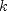
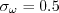
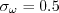
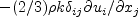
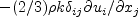
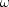
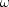

|
Langley Research CenterTurbulence Modeling Resource |
The Wilcox k-omega Turbulence Model
This web page gives detailed information
on the equations for various forms of the
Wilcox k-omega turbulence model.
All forms of the model given on this page are linear eddy viscosity models.
Linear models use the Boussinesq assumption for the constitutive relation:
Unless otherwise stated, for compressible flow with heat transfer this model is implemented as described on the page
Implementing Turbulence Models into the Compressible RANS Equations, with perfect gas
assumed and Pr = 0.72, Prt = 0.90, and Sutherland's law for dynamic viscosity.
Return to: Turbulence Modeling Resource Home Page The first version listed (Wilcox2006) is the latest "standard"
version of this model.
Wilcox (2006) k-omega
Two-Equation Model (Wilcox2006) and (Wilcox2006m)
The references for this model are:
The two-equation model (written in conservation form) is given by the following:
where
and the turbulent eddy viscosity is computed from:
where:
and There are no specific farfield boundary conditions recommended for this model.
See Menter k-omega SST
for farfield values recommended there.
Note that the Wilcox k-omega two-equation models exhibit some sensitivity to freestream
boundary conditions on At solid walls:
There are various wall boundary conditions mentioned for
as Alternatively, the Wilcox references also specify a so-called "slightly-rough-surface" boundary
condition for where it is important for smooth walls to "select a small enough value" of
The constants and auxiliary functions are:
Note that the Also note that in the so-called "Pope correction" for this model, the term
Note: the Wilcox (2006) k-omega
Two-Equation Model with k-equation Production Limiter (Wilcox2006-klim) and
(Wilcox2006-klim-m)
Although the official model described above does not include it, some applications use a production limiter
in the k-equation (patterned after the SST model).
Everything is identical to the (Wilcox2006) model above except that
the term P in the k-equation is replaced by:
There has been only limited experience to date, but
the use of this form as opposed to the "standard" version (Wilcox2006) appears to
makes very little difference.
When the
Wilcox (1998) k-omega
Two-Equation Model (Wilcox1998) and (Wilcox1998m)
The reference for this model is:
The two-equation model (written in conservation form) is given by the following:
and the turbulent eddy viscosity is computed from:
Meanings of variables and definitions of boundary conditions are the same as for
(Wilcox2006).
The constants and auxiliary functions are:
Note that the Also note that in the so-called "Pope correction" for this model, the term
When the
Wilcox (1988) k-omega
Two-Equation Model (Wilcox1988) and (Wilcox1988m)
The references for this model are:
The basic equations for this two-equation model are
the same as for (Wilcox1998):
and the turbulent eddy viscosity is computed from:
Note that the When the
Wilcox k-omega
Two-Equation Models with Vorticity Source Term
(Wilcox2006-V, Wilcox1998-V, Wilcox1988-V)
This form of two-equation models is sometimes used because vorticity magnitude
is usually readily available in
most Navier-Stokes codes. Furthermore, the vorticity source term is often nearly identical to the exact source
term in simple boundary layer flows, and the use of the vorticity term can avoid some numerical difficulties
sometimes associated with the use of the exact source term.
The reference for this usage is:
The equations are the same as for the "standard" versions of the Wilcox models,
with the exception that the term P (in both equations) is approximated with the following:
Note: When the
Note that this approximation is similar in spirit to the Kato-Launder correction
(Kato, M. and Launder, B. E., "The Modelling of Turbulent Flow Around Stationary and Vibrating Square Cylinders,"
9th Symposium on Turbulent Shear Flows, Kyoto, Japan, August 1993, paper 10-4), which uses
Low Reynolds Number
Version of Wilcox (2006) k-omega
Two-Equation Model (Wilcox2006-LRN)
The reference for this model is:
This model is the same as the (Wilcox2006) model, with the following
changes:
Instead of Instead of Instead of use:
Instead of use:
Instead of in
the  diffusion term use:
Instead of with:
Special notes for users of
OpenFOAM.
Return to: Turbulence Modeling Resource Home Page
Recent significant updates: Responsible NASA Official:
Ethan Vogel

![\frac{\partial (\rho k)}{\partial t} + \frac{\partial (\rho u_j k)}{\partial x_j}
= \cal P - \beta^* \rho \omega k + \frac{\partial}{\partial x_j}
\left[\left(\mu + \sigma_k \frac{\rho k}{\omega} \right)\frac{\partial k}{\partial x_j}\right]](wilcox2006_eqns/img2.png)


 is the density
and
is the density
and
 is the
molecular dynamic viscosity.
is the
molecular dynamic viscosity.
 (see Wilcox, D. C., Turbulence Modeling for CFD, 3rd edition, DCW Industries, Inc., La Canada CA, 2006
for details). An example of the sensitivity can be found on the
2D Mixing Layer Validation - Wilcox2006 Model Results page.
(see Wilcox, D. C., Turbulence Modeling for CFD, 3rd edition, DCW Industries, Inc., La Canada CA, 2006
for details). An example of the sensitivity can be found on the
2D Mixing Layer Validation - Wilcox2006 Model Results page.
 in the references above, including both smooth and rough walls. For smooth walls, the
asymptotic behavior is
in the references above, including both smooth and rough walls. For smooth walls, the
asymptotic behavior is

 ,
where d is the distance to the nearest wall.
However, according to Menter (AIAA J 32(8):1598-1605, 1994), it is not appropriate to
use this asymptotic value for the BC at a wall. Instead, many CFD codes employ the approximate
wall boundary condition from Menter for this model
(see Menter k-omega SST).
:
,
where d is the distance to the nearest wall.
However, according to Menter (AIAA J 32(8):1598-1605, 1994), it is not appropriate to
use this asymptotic value for the BC at a wall. Instead, many CFD codes employ the approximate
wall boundary condition from Menter for this model
(see Menter k-omega SST).
:
 to insure that
to insure that
 .
.


 coefficient (termed
coefficient (termed  in Wilcox's book)
was chosen in order to yield an appropriate value for the Karman constant
(
in Wilcox's book)
was chosen in order to yield an appropriate value for the Karman constant
( ), via the expression:
), via the expression:
 is zero for 2-D. If the Pope correction is specifically turned off for a 3-D computation, then the model should be
referred to as (Wilcox2006-noPope).
is zero for 2-D. If the Pope correction is specifically turned off for a 3-D computation, then the model should be
referred to as (Wilcox2006-noPope).
 term
in the Boussinesq approximation for tau_ij is sometimes ignored in the momentum and energy equations.
Similarly, the production term in two-equation turbulence models is often approximated by P = mu_t S2.
This expression is exact for incompressible flows and is typically
considered a very good approximation, except perhaps for very high Mach number flows (see items 4 and 7 on the page
Notes on Running the Cases with CFD, and the
Implementing Turbulence Models into the Compressible RANS Equations page).
There are various ways that these approximations can be implemented:
term
in the Boussinesq approximation for tau_ij is sometimes ignored in the momentum and energy equations.
Similarly, the production term in two-equation turbulence models is often approximated by P = mu_t S2.
This expression is exact for incompressible flows and is typically
considered a very good approximation, except perhaps for very high Mach number flows (see items 4 and 7 on the page
Notes on Running the Cases with CFD, and the
Implementing Turbulence Models into the Compressible RANS Equations page).
There are various ways that these approximations can be implemented:
term is IGNORED in tau_ij in the momentum and energy equations, and the production term is APPROXIMATED by
P = mu_t S2.
term is INCLUDED in tau_ij in the momentum and energy equations, and the production term is APPROXIMATED by
P = mu_t S2.
term is IGNORED in tau_ij in the momentum and energy equations, and the production term is THE EXACT expression.
term is ignored in tau_ij in the momentum and energy equations and the production term is approximated by
P = mu_t S2,
a modified naming convention should be used: (Wilcox2006-klim-m).
Other variants (s and e) follow the naming conventions described above at the end of the Wilcox2006 section.

 



 coefficient (termed
coefficient (termed  in Wilcox's book)
was chosen in order to yield an appropriate value for the Karman constant
(
in Wilcox's book)
was chosen in order to yield an appropriate value for the Karman constant
( ), via the expression:
), via the expression:
 is zero for 2-D.
term is ignored in tau_ij in the momentum and energy equations and the production term is approximated by
P = mu_t S2,
a modified naming convention should be used: (Wilcox1998m).
Other variants (s and e) follow the naming conventions described above at the end of the Wilcox2006 section.
is zero for 2-D.
term is ignored in tau_ij in the momentum and energy equations and the production term is approximated by
P = mu_t S2,
a modified naming convention should be used: (Wilcox1998m).
Other variants (s and e) follow the naming conventions described above at the end of the Wilcox2006 section.
![\frac{\partial (\rho k)}{\partial t} + \frac{\partial (\rho u_j k)}{\partial x_j}
= \cal P - \beta^* \rho \omega k + \frac{\partial}{\partial x_j}
\left[\left(\mu + \sigma_k \frac{\rho k}{\omega} \right)\frac{\partial k}{\partial x_j}\right]](wilcox1988_eqns/img2.png)
![\frac{\partial (\rho \omega)}{\partial t} + \frac{\partial (\rho u_j \omega)}{\partial x_j}
= \frac{\gamma \omega}{k} \cal P -
\beta \rho \omega^2 + \frac{\partial}{\partial x_j}
\left[ \left( \mu + \sigma_{\omega} \frac{\rho k}{\omega} \right)
\frac{\partial \omega}{\partial x_j} \right]](wilcox1988_eqns/img3.png)
The only difference is in the values taken by some of the variables:


 coefficient (termed
coefficient (termed  in Wilcox's book)
was chosen in order to yield an appropriate value for the Karman constant
(
in Wilcox's book)
was chosen in order to yield an appropriate value for the Karman constant
( ), via the expression:
), via the expression:
term is ignored in tau_ij in the momentum and energy equations and the production term is approximated by
P = mu_t S2,
a modified naming convention should be used: (Wilcox1988m).
Other variants (s and e) follow the naming conventions described above at the end of the Wilcox2006 section.
 term is ignored in tau_ij in the momentum and energy equations and the production term is approximated by
P = mu_t*(Omega2),
a modified naming convention should be employed: (Wilcox2006-Vm) or
(Wilcox1998-Vm) or (Wilcox1988-Vm).
term is ignored in tau_ij in the momentum and energy equations and the production term is approximated by
P = mu_t*(Omega2),
a modified naming convention should be employed: (Wilcox2006-Vm) or
(Wilcox1998-Vm) or (Wilcox1988-Vm).
 instead of
instead of
 . Implementation of the Kato-Launder
correction would be called (Wilcox2006-KL), (Wilcox1998-KL), or
(Wilcox1988-KL).
If the
term is ignored in tau_ij in the momentum and energy equations and
if the 
term in P is ignored, then the naming convention is
(Wilcox2006-KLm), (Wilcox1998-KLm), or
(Wilcox1988-KLm).
. Implementation of the Kato-Launder
correction would be called (Wilcox2006-KL), (Wilcox1998-KL), or
(Wilcox1988-KL).
If the
term is ignored in tau_ij in the momentum and energy equations and
if the 
term in P is ignored, then the naming convention is
(Wilcox2006-KLm), (Wilcox1998-KLm), or
(Wilcox1988-KLm).
 use:
use:

 use:
use:


 in
the  diffusion term use:
in
the  diffusion term use:


10/04/2024 - added "s" and "e" variant definitions
03/24/2021 - clarifications on use of "m" designation when P=mu_t S2 and k term ignored in momentum and energy equations
08/08/2016 - added Wilcox2006-klim naming convention
06/30/2015 - mention Pr, Pr_t, and Sutherland's law
07/08/2014 - mention of equation relating gamma and Karman's constant kappa
04/02/2014 - added Wilcox2006-noPope designation
12/16/2013 - added clarification that chi_w term is zero in 2-D (Pope correction)
8/29/2013 - mention of Kato-Launder correction
Page Curator:
Clark Pederson
Last Updated: 10/04/2024